Rekall elf hacking
This article was copied from the Rekall Forensics blog, posted on 2018-01-09. Copied with permission for historical preservation.
Imagine you are responding to an incident on an old Linux server. You log into the server, download your favorite Linux incident response tool (e.g. Linpmem, aff4imager), and start collecting evidence. Unfortunately the first thing you see is:
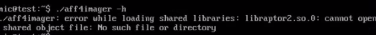
Argh! This system does not have the right library installed! Welcome to Linux's own unique version of DLL hell!
This is sadly, a common scenario for Linux incident response. Unfortunately we responders, can not pick which system we will investigate. Some of the compromised systems we need to attend to are old (maybe thats is why we need to respond to them :). Some are very old! Other systems simply do not have required libraries installed and we are rarely allowed to install required libraries on production machines.
In preparation to the next release of AFF4 imagers (including Linpmem, Winpmem and OSXPmem), I have been testing the imagers on old server software. I built an Ubuntu 10.04 (Lucid Lynx) system for testing. This distribution is really old and has been EOLed (end-of-life) in 2015, but I am sure some old servers are still running this.
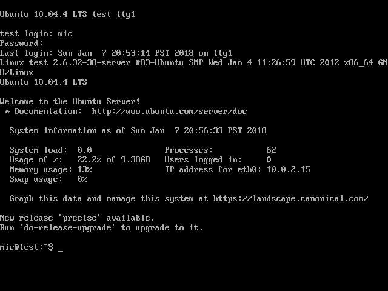
Such an old distribution helps to illustrate the problem - if we can get our tools to work on such an old system, we should be able to get them to work anywhere. In the process I learned a lot about ELF and how Linux loads executables.
In the rest of this post, I will be using this old system and trying to get the latest aff4imager tool to run on it. Note, that I am building and developing the binary on a modern Ubuntu 17.10 system.
Statically compiling the binary
As shown previously, just building the aff4 imager using the normal ./configure, make install commands will build a dynamically linked binary. The binary depends on a lot of libraries. How many? Let's take a look at the first screenfull of dependencies:
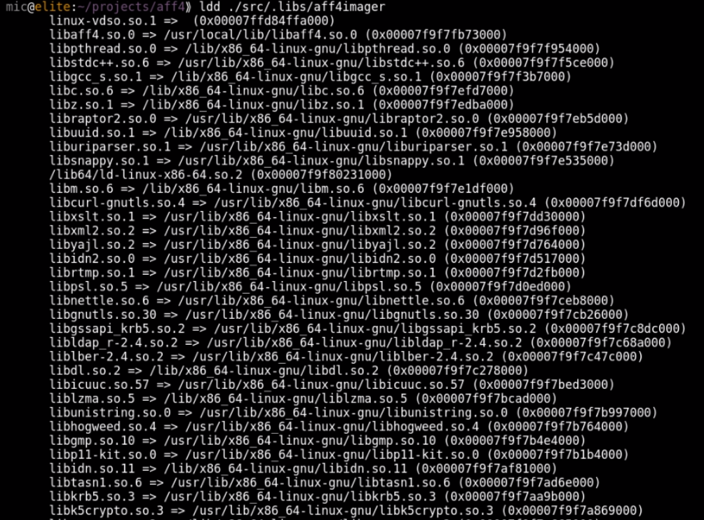
It is obviously not reasonable to ship such a tool for incident response. Even on a modern system this will require installing many dependencies. On servers and managed systems it may be against management policy to install so many additional packages.
The first solution I thought of is to simply build a static binary. GCC has the -all-static flag which builds a completely static binary. That sounds like what we want:
-all-static
If output-file is a program, then do not link it against any shared libraries at all.
Since modern linux distributions do not ship any static libraries, we need to build every dependency from source statically. This is mostly a tedious exercise but it is possible to create a build environment with the static libraries installed into a separate prefix directory. Adding the -all-static flag to the final link step will produce a fully static binary.
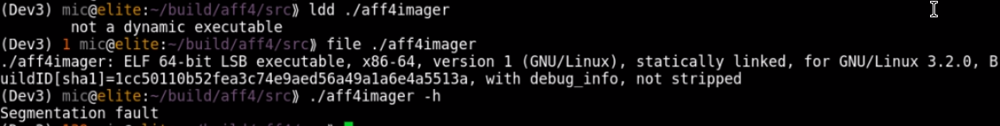
Excellent! This built a static binary as confirmed by ldd and file. Unfortunately this binary crashes, even on the modern system it was built on. If we use GDB we can confirm that it crashes as soon as any pthread function is called. It seems that statically compiling pthread does not work at all.
If we try to run this binary on the old system, it does not even get to start:
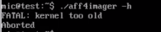
The program aborts immediately with "kernel too old" message. This was a bit surprising to me but it seems that static binaries do not typically run on old systems. The reason seems to be that glibc requires a minimum kernel version, and when we statically compile glibc into the binary, it refuses to work on older kernels. Additionally some functions simply do not work when statically compiled (i.e. pthread). For binaries which do not use threads, an all static build does work on modern enough kernel, but obviously it does not achieve the intended effect of being able to run on all systems since it introduces a minimum requirement on the running kernel.
Building tools on an old system
A common workaround is to build the tools on an old system, and perhaps ship multiple versions of the tool. For example, we might build a static binary for Ubuntu 10.04. Ubuntu 10.10 ... all the way through to modern Ubuntu 17.10 systems.
Obviously this is a lot of work in setting up a large build environment with all the different OS versions. In practice it is actually very difficult to achieve if not impossible. For example, the AFF4 library is written using modern C++11. The GCC versions shipped on such old systems as Ubuntu 10.04 do not support C++11 (The standard has not even been published when these systems were released!). Since GCC is intimately connected with glibc and libstdc++ it may not actually be possible to install a modern gcc without also upgrading glibc (and thereby losing compatibility with the old glibc which is the whole point of the exercise!).
Building a mostly static binary
Ok, back to the drawing board. In the previous section we learned that we can not statically link glibc into the binary because glibc is tied to the kernel version. So we would like to still dynamically link to the local glibc, but not much more. Ideally we want to statically compile all the libraries which may or may not be present on the system, so we do not need to rely on them being installed. We use the same static build environment as described above (so we have static versions of all dependent libraries).
Instead of specifying the "-all-static" flag as before we can specify the "-static-libgcc" and "-static-libstdc++" flags:
-static-libstdc++
When the g++ program is used to link a C++ program, it will normally automatically link against libstdc++. If libstdc++ is available as a shared library, and the -static option is not used, then this will link against the shared version of libstdc++. That is normally fine. However, it is sometimes useful to freeze the version of libstdc++ used by the program without going all the way to a fully static link. The -static-libstdc++ option directs the g++ driver to link libstdc++ statically, without necessarily linking other libraries statically.
This is looking better. When we build our aff4imager with these flags we get a dynamically linked binary, but it has a very small set of dependencies - all of which are guaranteed to be present on any functional Linux system:
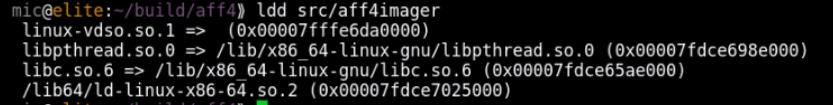
This is looking very promising! The binary works on a freshly installed modern Linux system since it links to libpthread dynamically, but does not require any external libraries to be installed. Lets try to run it on our old system:
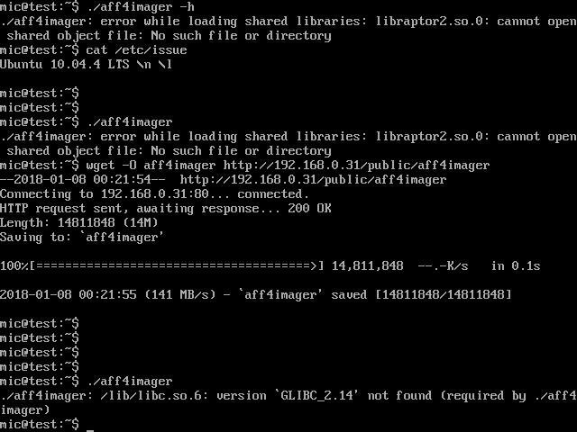
Argh! What does this mean?
Symbol versioning
Modern systems bind binaries to specific versions of each library function exported, rather than to the whole library. This is called Symbol Versioning.
The error reported by the old system indicates that the binary requires a particular version of GLIBC symbols (2.14) which is not available on this server. This puts a limit of the oldest system that we can run this binary on.
Symbol versioning means that every symbol in the symbol table requires a particular version. You can see which version each symbol requires using the readelf program:
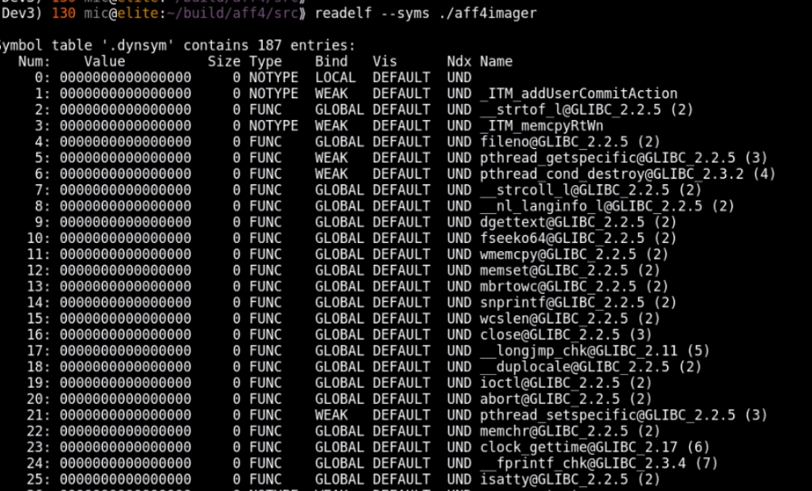
Before the binary is loaded, the loader makes sure it has all the libraries and their versions it needs. The readelf program can also report this:
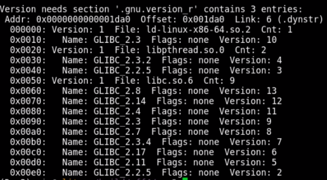
ELF parsing with Rekall
To understand how the ELF file format implements symbol versioning we can use Rekall to implement an ELF parser. The ELF parser is a pretty good example of Rekall's advanced type parser, so I will briefly describe it here. Readers already familiar with Rekall's parsing system, can skip to the next section.
The Rekall parser is illustrated in the diagram below
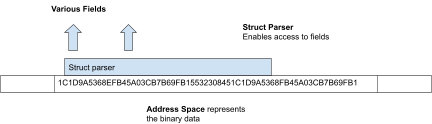
The Address Space is a Rekall class responsible for representing the raw binary data. Rekall's binary parser interprets the raw binary data through the Struct Parser class. Rekall automatically generates a parser class to decode each struct from three sources of information:
- The struct definition is given as a pure JSON structure (This is sometimes called the VTypes language). Typically this is automatically produced from debugging symbols.
- The overlay. This python data structure may introduce callables (lambdas) to dynamically calculate fields, offsets and sizes overlaying on top of the struct definition.
- If more complex interfaces are required, the user can also specify a class with additional methods which will be presented by the Struct Parser class.
The main emphasis of the Rekall binary parser is on readability. One should be able to look at the code and see how the data structures are constructed and related to one another.
Let us examine a concrete example. The elf64_hdr represents the ELF header.
The VType definition describes the struct name, its size, and each known field name, its relative offset within the struct as well as its type. This information is typically generated from debug symbols.
"elf64_hdr": [64, {
'e_ident': [0, ['array', 16, ['uint8_t']]],
'e_type': [16, ['uint16_t']],
'e_machine': [18, ['uint16_t']],
'e_version': [20, ['uint32_t']],
'e_entry': [24, ['uint64_t']],
'e_phoff': [32, ['uint64_t']],
'e_shoff': [40, ['uint64_t']],
'e_flags': [48, ['uint32_t']],
'e_ehsize': [52, ['uint16_t']],
'e_phentsize': [54, ['uint16_t']],
'e_phnum': [56, ['uint16_t']],
'e_shentsize': [58, ['uint16_t']],
'e_shnum': [60, ['uint16_t']],
'e_shstrndx': [62, ['uint16_t']],
}],
"elf64_hdr": [None, {
'e_type': [None, ['Enumeration', {
"choices": {
0: 'ET_NONE',
1: 'ET_REL',
2:'ET_EXEC',
3:'ET_DYN',
4:'ET_CORE',
0xff00:'ET_LOPROC',
0xffff:'ET_HIPROC'},
'target': 'uint8_t'}]],
'sections': lambda x: x.cast("Array",
offset=x.e_shoff,
target='elf64_shdr',
target_size=x.e_shentsize,
count=x.e_shnum),
}],
Similarly, we can add additional "pseudo" fields to the struct. When the user accesses a field called "sections", Rekall will run the callable allow it to create and return a new object. In this example, we return the list of ELF sections - which is just an Array of elf64_shdr structs specified at offset e_shoff.
class elf64_hdr(obj.Struct):
def section_by_name(self, name):
for section in self.sections:
if section.name == name:
return section
In this example we add the section_by_name() method to allow retrieving a section by its name.
We can now parse an ELF file. Simply instantiate an address space using the file and then overlay the header at the start of the file (offset 0). We can then use methods attached to the header object to navigate the file. In this case print all the section headers.
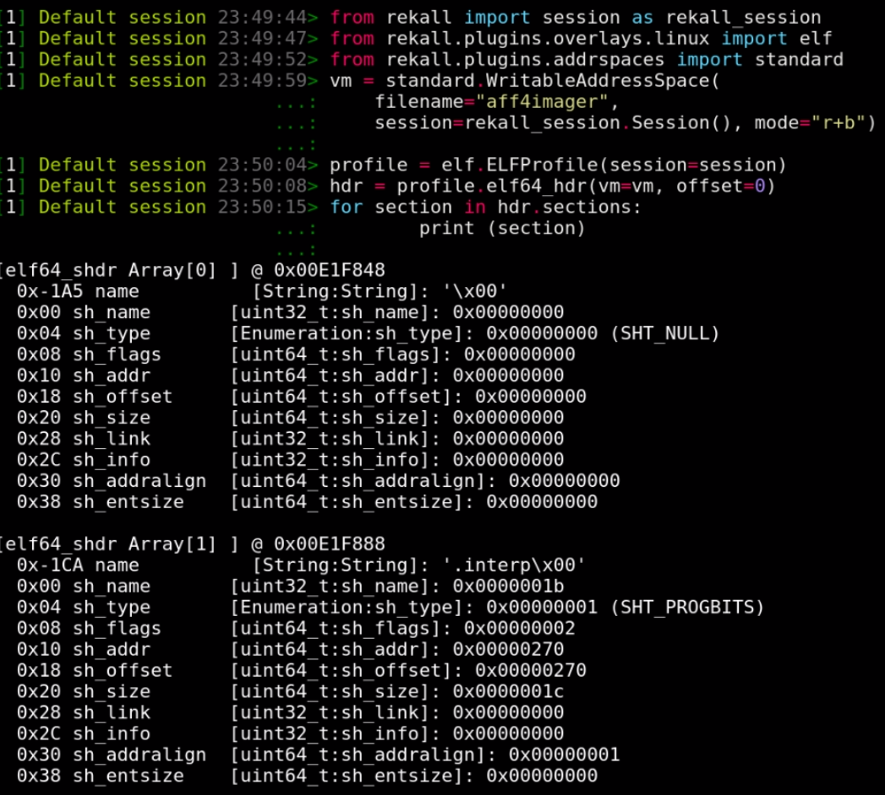
Symbol Versioning in ELF files
So how is symbol versioning implemented in ELF? There are two new sections defined: The ".gnu.version" (SHT_GNU_versym) and the ".gnu.version_r" (SHT_GNU_verneed).
Let's examine the SHT_GNU_verneed section first. Its name is always ".gnu.version_r" and it consists of two different structs - the elf64_verneed struct is a linked list essentially naming the library files needed (e.g. libc.so.6). Each elf64_verneed struct is also linked to a second list of elf64_vernaux structs naming the versions of the library needed.
This arrangement can be thought of as a quick index of all the requirements of all the symbols. The linker can just quickly look to see if it has all the required files and their symbols before it even needs to examine each symbol. The most important data is the "other" number which is a unique number referring to a specific filename + version pair.
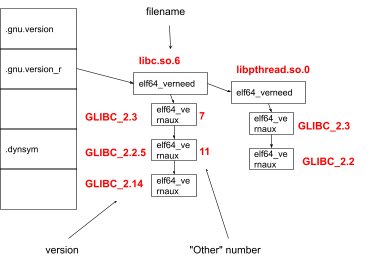
The next important section is the SHT_GNU_versym section which always has the name ".gnu.version". This section holds an array of "other" numbers which line up with the binaries symbol table. This way each symbol may have and "other" number in its respective slot.
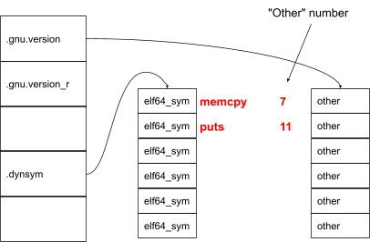
The "other" number in the versym array matches with the same "other" number in the verneed structure.
We can write a couple of Rekall plugins to just print this data. Let's examine the verneed structure using the elf_versions_needed plugin:
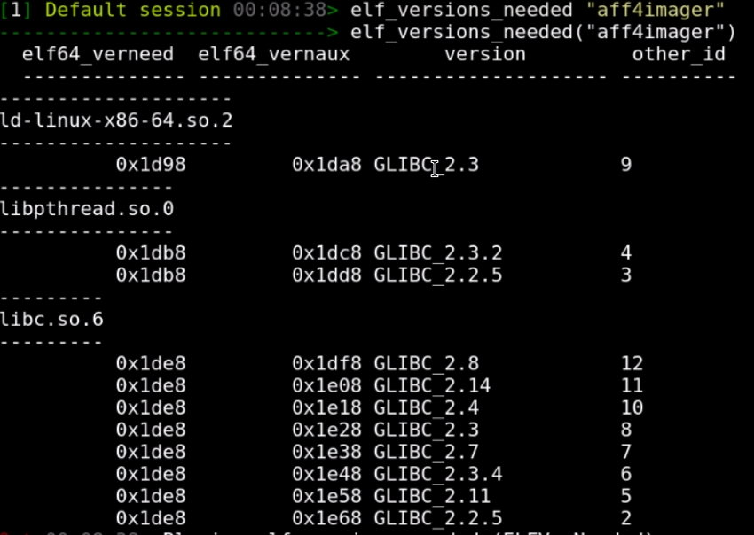
Note the "other" number for each filename + version string combination.
Lets now print the version of each symbol using the elf_versions_symbols plugin.
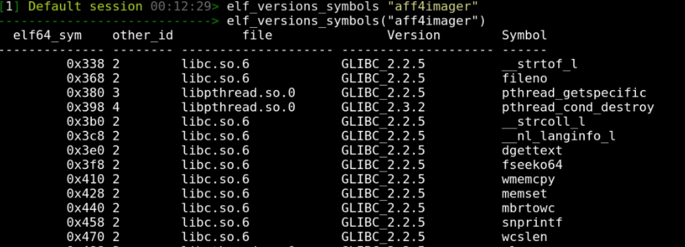
Fixing the Symbol Versioning problem
Ok so how do we use this to fix the original issue? While symbol versioning has its place, it prevents newer binaries from running on old systems (which do not have the required version of some functions). Often however the old system has some (older but working) version of the required method.
If we can trick the system into loading the version it has instead of the version the binary requires, then the binary can be linked at runtime and would work. It will still invoke the old (possibly buggy) version of these functions, but that is what every other software on the system will be using anyway.
Take for example the memcpy function which on the old system is available as memcpy@2.2.5. This function was replaced with a more optimized memcpy@2.14, because newer binaries require breaking backwards compatibility. This is discussed in an LWN article about the memcpy change. Old binaries running on the old system still use (the possibly slower) memcpy@2.2.5, so if we make our binary use the old version instead of the new version it would be no worse than existing old binaries (certainly if we rebuilt our binary on the old system it would be using that same version anyway). We don't actually need these optimizations so it should be safe to just remove the versioning in most cases.
Rekall also provides write support. Normally, Rekall operates off a read only image, so it is not useful, but if Rekall operates on a writable media (like live memory) and write support is enabled, then Rekall can modify the struct. In python this works by simply assigning to the struct field.
So the goal is to modify the verneed index so it refers to acceptably old enough versions. The verneed section is an index of all the symbol versions and the loader checks these before even loading the symbol table.
We can then also remove the "other" number in the versym array to remove versioning for each symbol. The tool was developed and uploaded to the contrib directory of the Rekall distribution. As can be seen after the modifications the needed versions are all reset to very early versions.
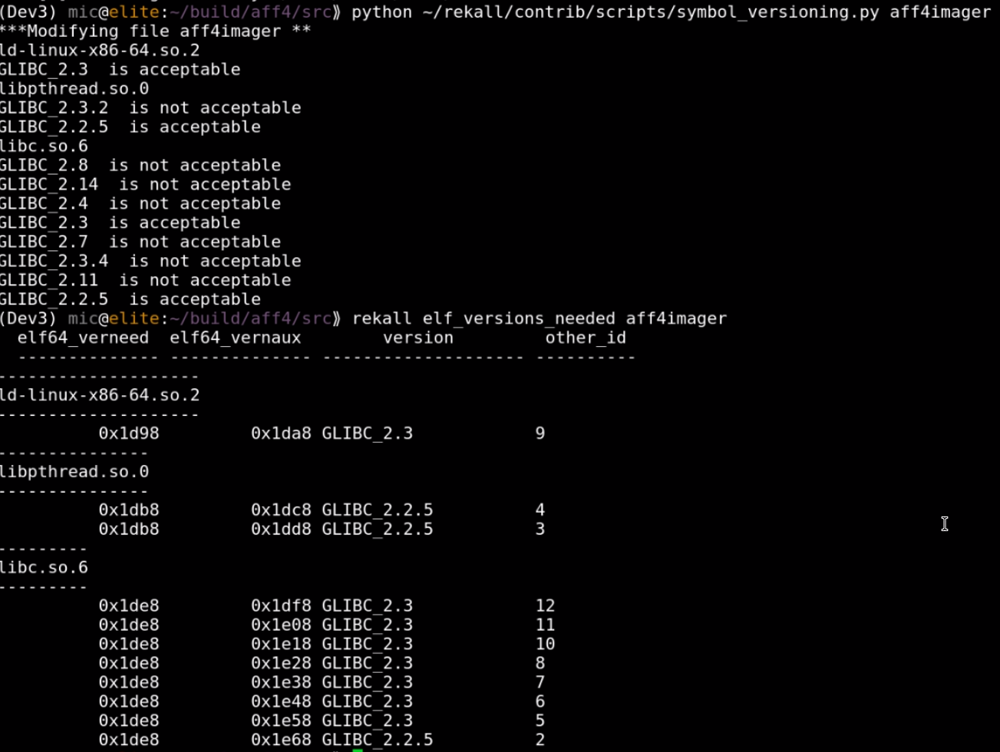
One last twist
Finally we try to run the binary on the old system and discover that the binary is trying to link a function called clock_gettime@GLIBC_2.17. That function simply does not exist on the old system and so fails to link (even when symbol versioning is removed).
At this point we can either:
- Map the function to a different function
- Implement a simple wrapper around the function.
By implementing a simple wrapper around the missing function and statically linking that into the binary we can be assured that our binary will only call functions which are already available on the old system. In this case we can implement clock_gettime() as a wrapper to the old gettimeofday().
int clock_gettime(clockid_t clk_id, struct timespec \*tp) {
struct timeval tv;
clk_id++;
int res = gettimeofday(&tv, NULL);
if (res == 0) {
tp->tv_sec = tv.tv_sec;
tp->tv_nsec = tv.tv_usec / 1000;
}
return res;
}
The moment of truth
By removing symbol versioning we can force our statically built imager to run on the old system. Although it is not often that one may need to respond to an old system, when the need arises it is imperative to have ready to use and tested tools.
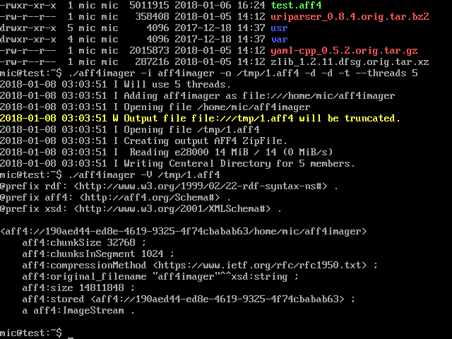
Other tools
I wanted to see if this technique was useful for other tools. One of my other favourite IR tools is OSQuery which is distributed as a mostly statically built binary. I downloaded the pre-built Linux binary and checked its dependencies.
There are a few more dependencies but nothing which can not be found on the system.
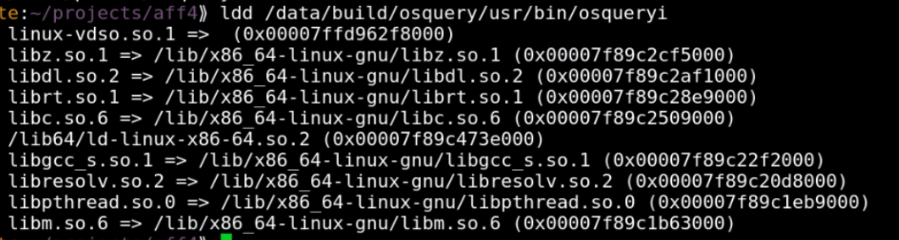
Again the binary requires a newer version of GLIBC and so will not run on the old system:
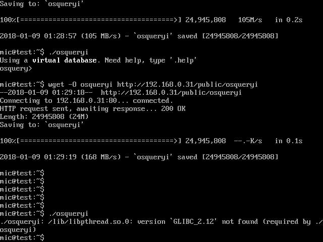
I applied the same Rekall script to remove symbol versioning. However, this time, the binary still fails to run because the function pthread_setname_np is not available on this system.
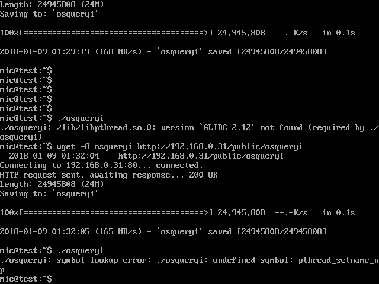
We could implement a wrapper function like before, but this will require rebuilding the binary and this takes some time. Reading up on the pthread_setname_np function it does not seem important (it justs sets the name of the thread for debugging). Therefore we can just re-route this function to some other safe function which is available on the system.
Re-routing functions can be easily done by literally loading the binary in a hex editor and replacing "pthread_setname_np" with "close" inside the symbol table.
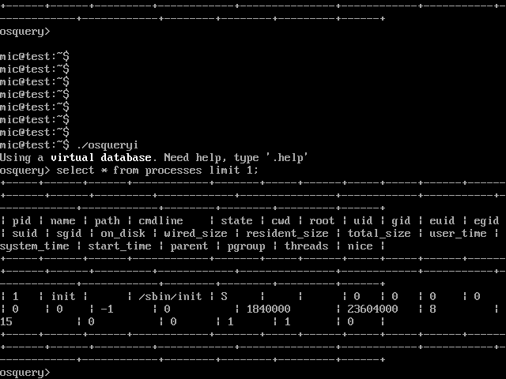